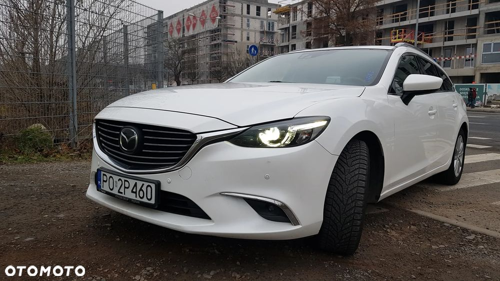
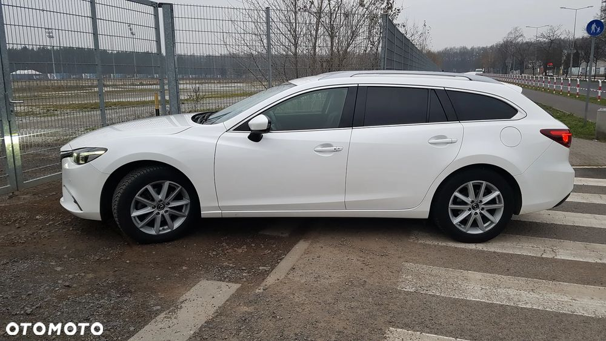
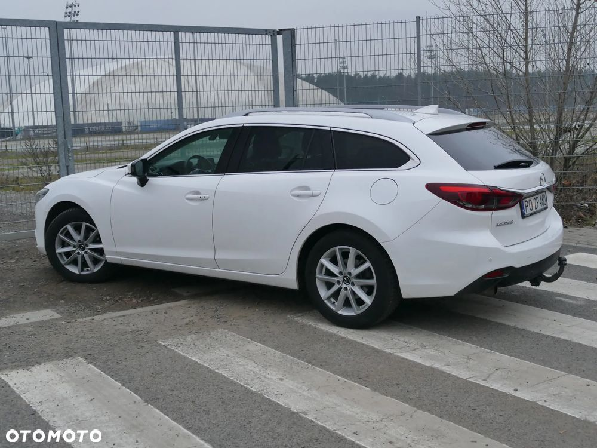
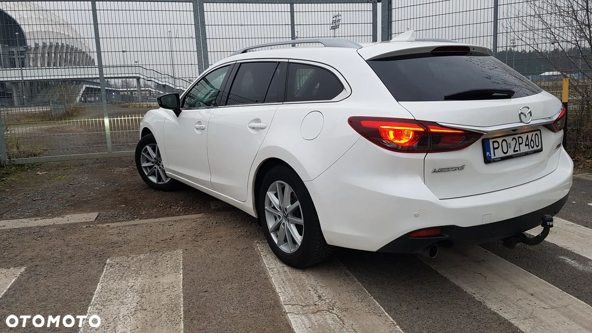
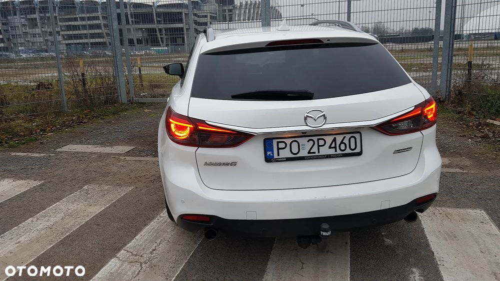
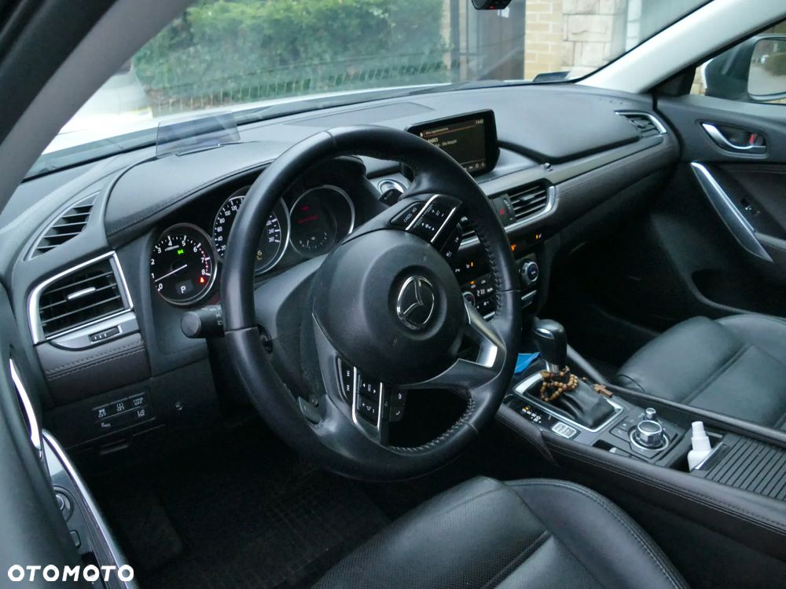
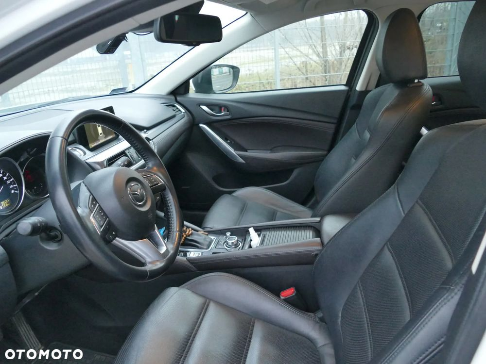
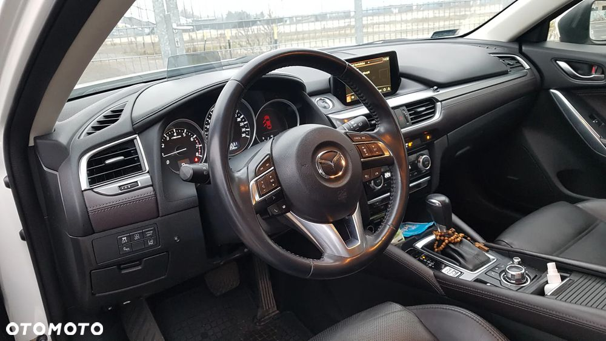
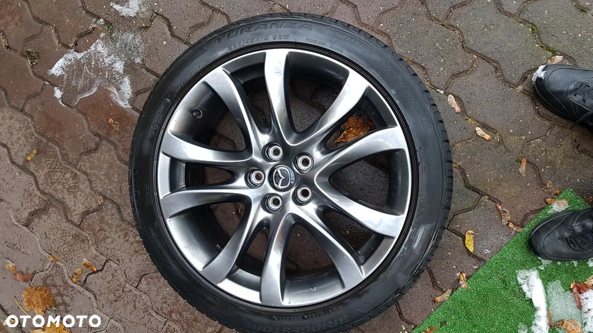
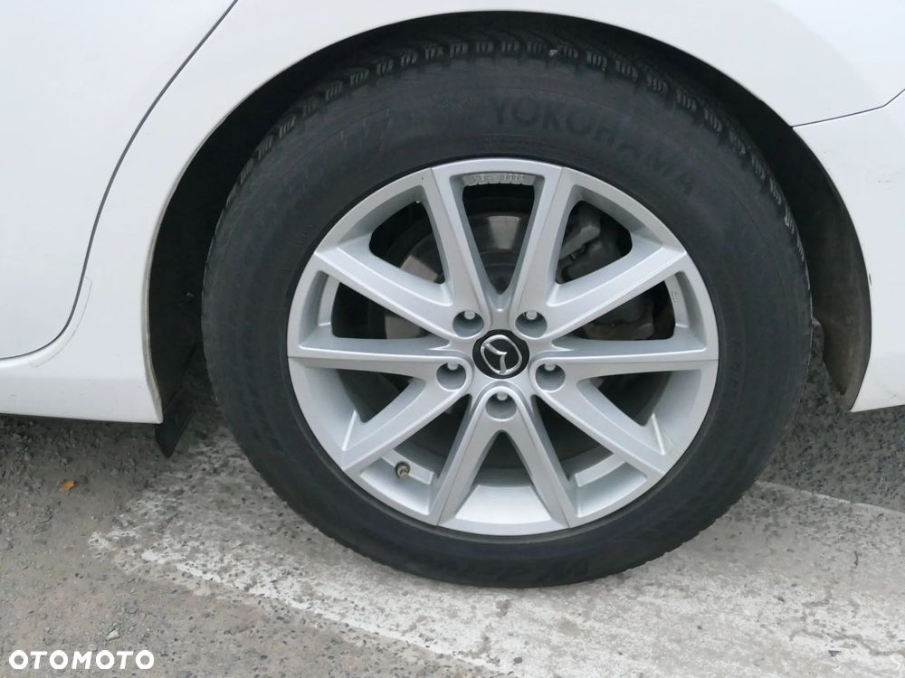

Dzień dobry,
posiadam na sprzedaż Mazdę 6, z silnikiem 2.5 benzyna, automatyczną skrzynią biegów oraz wyposażeniem Skypassion.
Przebieg 148800 km.
Rok produkcji grudzień 2015, pierwsza rejestracja styczeń 2016.
Auto bezwypadkowe, użytkowane prywatnie, serwisowane w ASO Mazda.
Bogate wyposażenie, między innymi:
- skórzana tapicerka,
- światła led matrix,
- aktywny tempomat,
- lane assist,
- wyświetlacz Head-up,
- czujnik martwego pola,
- bezkluczykowy dostęp
- elektrycznie regulowane, podgrzewane fotele przednie,
- podgrzewana kanapa tylna,
- nawigacja,
Dwa komplety kół letnie i zimowe na oryginalnych felgach mazdy 17' i 19'
Nowe opony letnie
Samochód posiadał dwa drobne incydenty przetarć parkingowych plastikowych zderzaków. Oba naprawione profesjonalnie w ASO Mazda. Posiadam zdjęcia oraz rachunki do wglądu.
Dynamiczna wymiana oleju skrzyni biegów wykonana przy przebiegu ok. 90tys. km.
Dostępna kompletna dokumentacja serwisowa.
Auto 100% sprawne technicznie.
Zapraszam do kontaktu telefonicznego oraz oględzin auta na terenie Poznania lub Buku.
